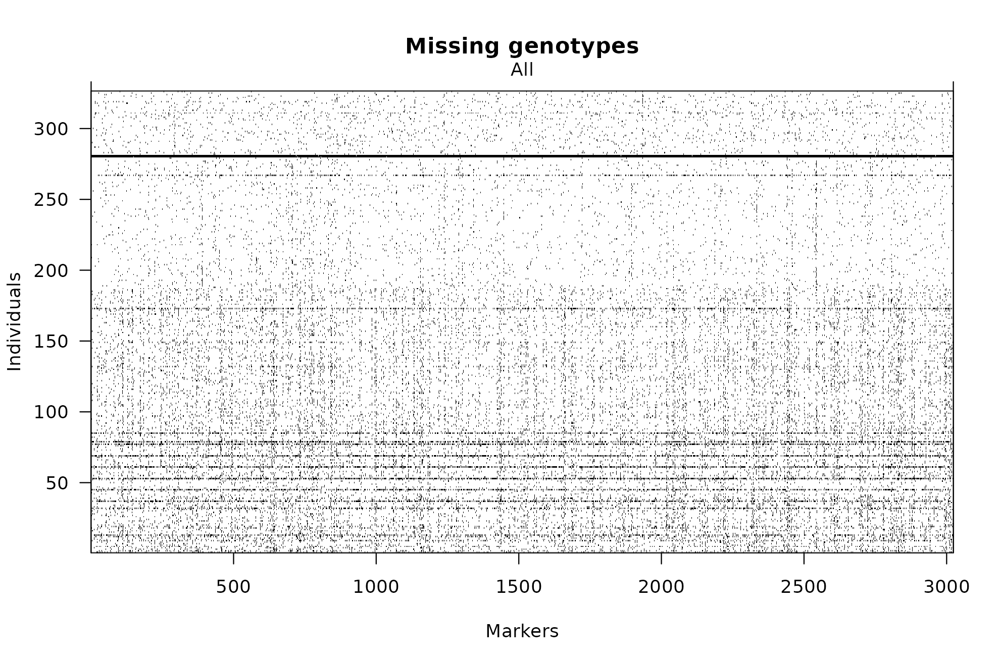
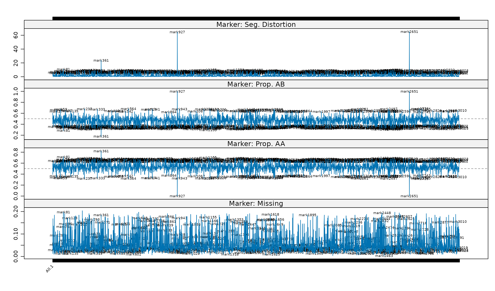
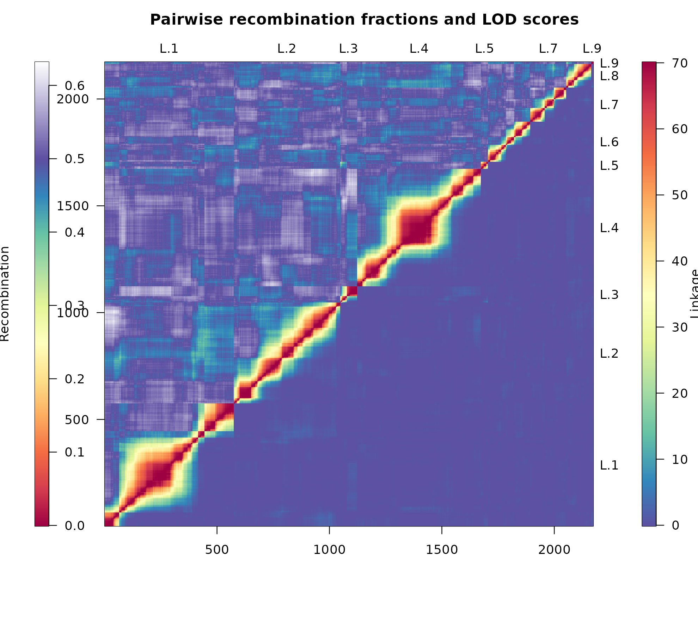
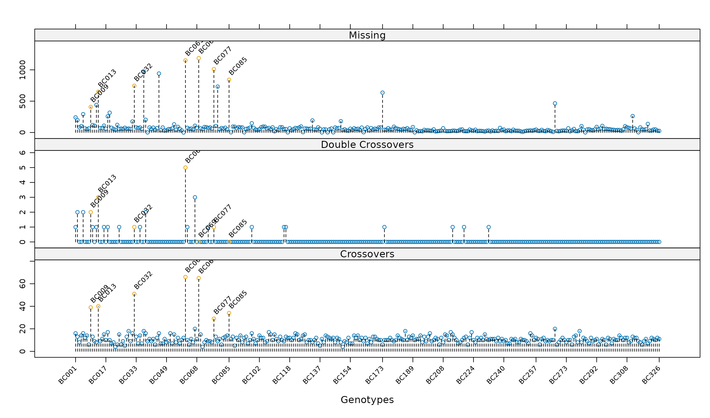
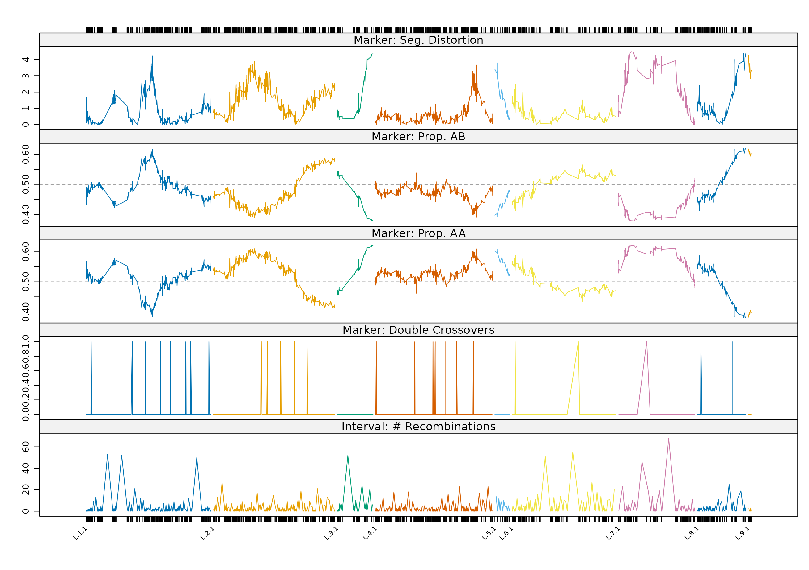

Worked example I: construction
Source:vignettes/articles/worked-example-construction.Rmd
worked-example-construction.RmdThis article works through the construction of a linkage map for a
barley backcross population, comprising 3,023 markers genotyped on 326
individuals and supplied as an unconstructed R/qtl object of class
"bc". The refinement of the resulting map is continued in
Worked example II.
data(mapBCu, package = "ASMap")Pre-construction
Construction seldom consists of applying an algorithm to marker data as supplied. It is prudent to work through a checklist beforehand, to establish that the genotypes and markers being used are of the best available quality. The following is a non-exhaustive but ordered list for an unconstructed marker set.
- Check missing allele scores, both across markers for each genotype and across genotypes for each marker. A high proportion of missing information may indicate problems with the physical genotyping.
- Check for genetic clones, or individuals sharing a high proportion of matching allelic information.
- Check markers for excessive segregation distortion. Highly distorted markers may not map to a unique location.
- Check markers for switched alleles. Such markers will not cluster or link well during construction, and it is preferable to repair their alignment beforehand.
- Check for co-locating markers. For large maps it is computationally more efficient to omit markers co-located with others, at least temporarily.
Missing allele scores
R/qtl provides a simple graphical check on the structure of missing scores across both genotypes and markers.
plotMissing(mapBCu)
Missing allele scores for the unconstructed map mapBCu.
The darkest lines indicate genotypes carrying large amounts of
missing data, which may reflect poor physical genotyping; these should
be removed before proceeding. The markers are otherwise well scored
across the range of genotypes. statGen() identifies the
genotypes concerned, which are then removed using the usual R/qtl
facilities.
Genetic clones
Highly related individuals inflate the segregation distortion of
markers, so a course of action, whether removal of individuals or the
formation of consensus genotypes, should be settled before further
diagnosis. genClones() identifies and reports them; see Diagnosing genotypes and markers for the
function itself.
gc <- genClones(mapBC1, tol = 0.95)
gc$cgd G1 G2 coef match diff na.both na.one group
1 BC045 BC039 0.9919 1466 12 97 1448 1
2 BC052 BC039 1.0000 2423 0 98 502 1
3 BC168 BC039 1.0000 2572 0 47 404 1
4 BC052 BC045 0.9899 1476 15 94 1438 1
5 BC168 BC045 0.9872 1620 21 44 1338 1
6 BC168 BC052 1.0000 2577 0 36 410 1
7 BC067 BC060 1.0000 2759 0 8 256 2
8 BC135 BC086 1.0000 2743 0 17 263 3
9 BC099 BC093 1.0000 2737 0 19 267 4
10 BC120 BC117 1.0000 2699 0 22 302 5
11 BC129 BC126 1.0000 2678 0 35 310 6
12 BC204 BC138 1.0000 2691 0 6 326 7
13 BC147 BC141 0.9996 2753 1 22 247 8
14 BC193 BC144 1.0000 2771 0 7 245 9
15 BC162 BC161 1.0000 2686 0 20 317 10
16 BC205 BC190 1.0000 2886 0 7 130 11
17 BC286 BC285 1.0000 2920 0 1 102 12
18 BC325 BC314 1.0000 2911 0 4 108 13Thirteen groups share more than 0.95 of their alleles. The accompanying statistics require interpretation rather than acceptance. The first group contains three pairs matched on 1,620 markers or fewer, and those same pairs have approximately 1,400 markers at which an allele was present for one genotype and missing for the other. That is insufficient evidence of cloning, and the group is therefore removed from the table before consensus genotypes are formed for the remainder.
cgd <- gc$cgd[-c(1, 4, 5), ]
mapBC2 <- fixClones(mapBC1, cgd, consensus = TRUE)
levels(mapBC2$pheno[[1]])[grep("_", levels(mapBC2$pheno[[1]]))] [1] "BC039_BC052_BC168" "BC060_BC067" "BC086_BC135"
[4] "BC093_BC099" "BC117_BC120" "BC126_BC129"
[7] "BC138_BC204" "BC141_BC147" "BC144_BC193"
[10] "BC161_BC162" "BC190_BC205" "BC285_BC286"
[13] "BC314_BC325" Segregation distortion
Segregation distortion is the phenomenon whereby observed allelic frequencies at a locus deviate from those expected under Mendelian genetics. It may arise from laboratory processes, or in local genomic regions from underlying biological mechanisms (Lyttle 1991).
The extent of distortion, the allelic proportions and the proportion
of missing values may be displayed together with
profileMark(). Setting crit.val = "bonf"
annotates markers whose p-value for the test of segregation distortion
falls below a family-wise Bonferroni adjusted level of 0.05 divided by
the number of markers.
profileMark(mapBC2, stat.type = c("seg.dist", "prop", "miss"), crit.val = "bonf",
layout = c(1, 4), type = "l", cex = 0.5)
For individual markers, the negative log10 p-value for the test of segregation distortion, the proportion of each contributing allele and the proportion of missing values.
Numerous markers are significantly distorted, three of them highly so, and the proportion of missing values does not exceed 20% for any marker. The three extreme markers are dropped on the basis of their allele proportions.
mm <- statMark(mapBC2, stat.type = "marker")$marker$AB
mapBC3 <- drop.markers(mapBC2, c(markernames(mapBC2)[mm > 0.98],
markernames(mapBC2)[mm < 0.2]))Setting markers aside
Without a constructed map the origin of the segregation distortion
cannot be determined. Using distorted markers indiscriminately may
nonetheless create problems during construction. The more prudent course
is to set the distorted markers aside, construct the map from the less
problematic remainder, and then reintroduce them to establish whether
their effect is beneficial or deleterious. pullCross() and
pushCross() exist for this purpose; see Pulling and pushing markers. Here
they are also used to set aside markers with 10 to 20% missing values,
and co-located markers.
mapBC3 <- pullCross(mapBC3, type = "missing", pars = list(miss.thresh = 0.1))
mapBC3 <- pullCross(mapBC3, type = "seg.distortion", pars = list(seg.thresh = "bonf"))
mapBC3 <- pullCross(mapBC3, type = "co.located")
names(mapBC3)[1] "geno" "pheno" "missing" "seg.distortion"
[5] "co.located" [1] 847A total of 847 markers have been set aside in their respective elements, leaving 2,173 markers from which the map is constructed.
Construction
The curated marker data in mapBC3 may now be passed to
mstmap().
mapBC4 <- mstmap(mapBC3, bychr = FALSE, trace = FALSE, dist.fun = "kosambi",
p.value = 1e-12)Number of linkage groups: 9
The size of the linkage groups are: 574 473 75 551 32 188 160 110 10
The number of bins in each linkage group: 182 204 31 191 18 91 73 60 6
chrlen(mapBC4) L.1 L.2 L.3 L.4 L.5 L.6 L.7
304.910957 266.240647 78.982131 252.281760 33.226962 233.485952 153.315888
L.8 L.9
106.290403 6.657526 Setting bychr = FALSE bulks the complete marker set and
constructs from first principles, clustering the markers into linkage
groups and then ordering the markers within each. For a population of
309 individuals, p.value = 1e-12 gives a threshold of
approximately 30 cM before markers in distinct clusters are linked; the
relationship is set out in How the
MSTmap algorithm works. The resulting map contains nine linkage
groups, each optimally ordered.
Assessment by heat map
heatMap(mapBC4, lmax = 70)Warning in heatMap(mapBC4, lmax = 70): Running est.rf.
Heat map of the constructed linkage map mapBC4.
As discussed in Heat maps, an accurate
display is obtained when the heat of the recombination fractions on the
upper triangle matches that of the LOD scores, which
lmax = 70 achieves here. The heat is consistent across the
markers within each linkage group, indicating strong linkage between
neighbouring markers, and the groups appear distinctly clustered.
Assessment by recombination rate
A successful heat map does not expose subtler problems. One of the key characteristics of a well constructed map is an appropriate recombination rate among the genotypes. For this population each line is considered independent with an expected rate of approximately 14 across the genome, yet the map contains linkage groups exceeding the theoretical cutoff of 200 cM, which suggests genotypes with inflated rates.
pg <- profileGen(mapBC4, bychr = FALSE, stat.type = c("xo", "dxo", "miss"),
id = "Genotype", xo.lambda = 14, layout = c(1, 3), lty = 2,
cex = 0.7)
For individual genotypes, the number of recombinations, double recombinations and missing values for mapBC4.
Seven lines have recombination rates above 20, and the same lines carry excessive missing values.
The offending genotypes are removed with
subsetCross()rather thansubset.cross(), so that the"co.located","seg.distortion"and"missing"elements are subset and their statistics recalculated alongside the map. Those statistics govern which markers are later restored.
mapBC5 <- subsetCross(mapBC4, ind = !pg$xo.lambda)
mapBC6 <- mstmap(mapBC5, bychr = TRUE, dist.fun = "kosambi", trace = FALSE,
p.value = 1e-12)Number of linkage groups: 1
The size of the linkage groups are: 574
The number of bins in each linkage group: 171
Number of linkage groups: 1
The size of the linkage groups are: 473
The number of bins in each linkage group: 197
Number of linkage groups: 1
The size of the linkage groups are: 75
The number of bins in each linkage group: 28
Number of linkage groups: 1
The size of the linkage groups are: 551
The number of bins in each linkage group: 186
Number of linkage groups: 1
The size of the linkage groups are: 32
The number of bins in each linkage group: 17
Number of linkage groups: 1
The size of the linkage groups are: 188
The number of bins in each linkage group: 90
Number of linkage groups: 1
The size of the linkage groups are: 160
The number of bins in each linkage group: 72
Number of linkage groups: 1
The size of the linkage groups are: 110
The number of bins in each linkage group: 59
Number of linkage groups: 1
The size of the linkage groups are: 10
The number of bins in each linkage group: 5
chrlen(mapBC6) L.1 L.2 L.3 L.4 L.5 L.6 L.7
229.578103 223.170605 65.806120 214.380402 27.297642 191.060846 140.114968
L.8 L.9
88.687053 4.875885 The linkage group lengths have fallen considerably, and the recombination rates of the remaining genotypes may be confirmed to lie within acceptable limits.
Marker and interval profiles
profileMark(mapBC6, stat.type = c("seg.dist", "prop", "dxo", "recomb"),
layout = c(1, 5), type = "l")
Marker profiles of the negative log10 p-value for the test of segregation distortion, allele proportions and the number of double crossovers, together with the interval profile of the number of recombinations between adjacent markers in mapBC6.
The profiles confirm the success of the construction: no more than one double crossover occurs at any marker, and very few in total. They also show the extent of biological distortion that can arise within a linkage group.
Closer inspection of the segregation distortion and allele proportion panels indicates that linkage group L.3 and the short group L.5 have profiles that would join were the groups merged, and similarly for L.8 and L.9. That possibility is pursued in Worked example II.
Further reading
- Worked example II — reintroducing the markers set aside, merging linkage groups and post-construction development
- Diagnosing genotypes and markers — the diagnostic functions used above
- Pulling and pushing markers — the mechanism for setting markers aside